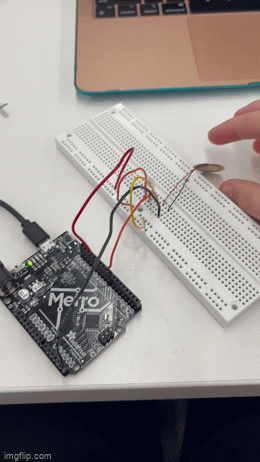
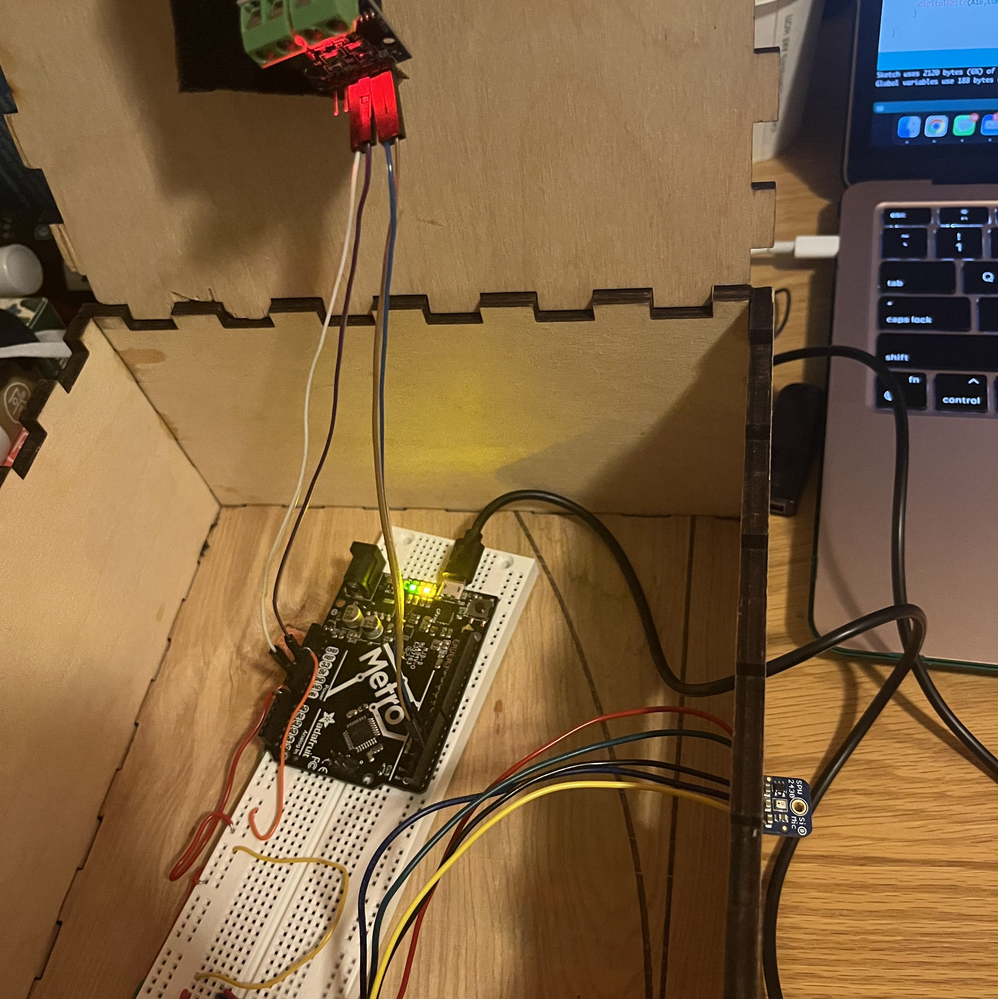

<div class="container-fluid">
<h3 style="text-align: center;"> Week 4: Microcontroller Programming </h3>
<h4 style="color: black;background-color:#6EDCF7;"> Sound Controlled Kinetic Sculpture </h4>
<p>
For this week's assignment, I wanted to build on my kinetic sculpture from last week. I thought it would be fun to use sensors of some kind to control the start and stop of my animal carousel. My first idea was to use some kind of audio sensor so that the carousel could be kind of like a game of musical chairs (and a bonus perk would be that the noise of the music would help cover the atrocious sound of acrylic moving on wood). I looked around the lab and couldn't find an audio sensor so I decided to try something else. I found the Piezo vibration sensor and decided to try to make my motor knock or touch controlled. With the help of a tutorial, I started by setting up an LED to turn on and off when the piezo detected a vibration. I wasn't super happy with the sensitivity and control this offered and after a lot of time just to get the LED working, I decided the final product wouldn't feel worth it enough, so I switched gears back to my original idea.</p>
<p>I asked Chris for help, and he was able to track down an <a href="https://www.adafruit.com/product/2716">Adafruit MEMS Microphone Breakout SPW2430</a>. I soldered wires onto the sensor and set to work making my breadboard and programming my microcontroller. Unfortunately there didn't seem to be a tutorial of any kind for this specific mic so I tried to follow 2 <a href="https://learn.sparkfun.com/tutorials/mems-microphone-hookup-guide/all">similar tutorials</a> for <a href="https://learn.sparkfun.com/tutorials/sound-detector-hookup-guide/all">different products.</a> I connected my motor to the L9110 motor driver and set up my breadboard and microcontroller. After many hours of frustration, I couldn't get anything to work. After class, I asked Nathan for advice and he miraculously informed me that the lack of tutorial for this microphone is known and there is a tutorial just for our class <a href="https://nathanmelenbrink.github.io/ps70/06_input/mic/index.html">during week 6!</a> I was equally overjoyed and frustrated when I was able to follow this tutorial and in 10 minutes succeed where I had spent 10 hours failing. Nevertheless, I was able to finish my code and program my microcontroller to listen for a certain volume level from the microphone input and if it was past the threshold, turn on the motor! Once it was working, I cleaned up the wires and even taped some things down to make sure I could close my box and not have anything accidentally unplug. I fed my power cord and the microphone through the slot in my box and it was ready to go! I had so much fun adjusting the sensitivity levels so that the animals could basically spin on the beat to different songs. I think I could spend much more time on this — I'm curious if I could program this microphone to listen for certain frequencies and be able to control the motor based on more specific kinds of sounds rather than just loud versus silent as it is now. Still, I'm super happy with the results of this week's assignment, especially because I was really struggling with the coding aspect of this class but it all worked out in the end! Below is my final code and then three videos of me experimenting with the abilities and limits of my new creation: first a video of me testing with snaps and rustling paper and then the animals dancing to a Taylor Swift song!</p>
<pre><code>
const int sampleWindow = 50; // Sample window width in mS (50 mS = 20Hz)
const int A1A = 3;
const int A1B = 4;
unsigned int sample;
void setup() {
Serial.begin(9600);
pinMode(A1A, OUTPUT);
pinMode(A1B, OUTPUT);
digitalWrite(A1A, LOW);
digitalWrite(A1B, LOW);
}
void loop() {
unsigned long startMillis= millis(); // Start of sample window
unsigned int peakToPeak = 0; // peak-to-peak level
unsigned int signalMax = 0;
unsigned int signalMin = 1024;
// collect data for 50 mS
while (millis() - startMillis < sampleWindow) {
sample = analogRead(0); //reading DC pin from pin A0
if (sample < 1024) // toss out spurious readings {
if (sample > signalMax) {
signalMax = sample; // save just the max levels
}
else if (sample < signalMin) {
signalMin = sample; // save just the min levels
}
}
}
peakToPeak = signalMax - signalMin; // max - min = peak-peak amplitude
Serial.println(peakToPeak);
if (peakToPeak<=25) { // adjust this value to make more and less sensitive!
digitalWrite(A1A,LOW); // turn motor off
digitalWrite(A1B,LOW);
}
else if (peakToPeak > 25) { // adjust this value to make more and less sensitive!
digitalWrite(A1A,255); // turn motor on
digitalWrite(A1B,LOW);
}
}
</code></pre>
<center>
<video width="450" height="auto" controls>
<source src="snaps.mp4" type="video/mp4">Your browser does not support the video </video>
<video width="450" height="auto" controls>
<source src="readyforit.mp4" type="video/mp4">Your browser does not support the video tag.</video>
</center>